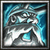

Q Разветвленная молния — цепная молния по 25 целям в области 400. Урон: INT × 1.4 + 275/400/525/650/775. Кулдаун 10 сек — спамь.
W Громовой скачок — прыжок на 700–1500, урон + 50% замедление на 3 сек. И инициация, и эскейп.
E Гроза — 4–12 разрядов по области 450. Огромный суммарный урон, но 0.25 сек задержка — нужно попадать по стоячим.
R Громовой рёв — бьёт ВСЕХ вражеских героев на карте (область 3000). 1000 + INT × 4/8/12/16/20. Скипетр — 15% шанс перезарядки.
F Разряд молнии — точечный стан 1.3 сек + урон, считается атакой. Дальний фокус-стан.
R с кулдауном 130 сек — самое долгое в игре. Скипетр даёт 15% шанс перезарядки. В затяжной драке — два R вместо одного. Это решает исход матча.